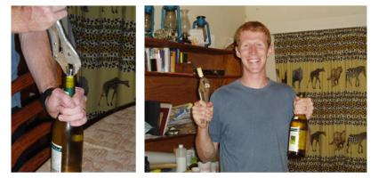

Yesterday I visited Zolozolo Primary School for the Grand Opening ceremonies for their new library. This school recieved 1.5 tons of books from the World Care shipment. Zolozolo has dedicated a small room for the library, built shelves, labeled everything by category, and are making arrangements for student library cards and class visits to the library for reading time. This is a school that only had 1 book per 6 or so kids before this shipment.
Daily Life
Zolozolo Primary School Library Opening Ceremony
Submitted by marissa on Sun, 2006-12-03 11:29.Categories:
»
- marissa's blog
- Login to post comments
- Read more
Malawian Corkscrew
Submitted by marissa on Fri, 2006-11-10 07:59.Malawian Corkscrew
Categories:
»
- marissa's blog
- Login to post comments
Artists Supporting Artists
Submitted by marissa on Sat, 2006-10-28 12:13.I have commissioned local woodcarver and artist, Solomon and Gilbert, to make custom, hand carved frames for my paintings. I’m getting ready for exhibitions back home and thought that it would be a nice touch to have frames made in Malawi especially since woodcarving is the main art form here. In addition, it makes work for local artists!
Categories:
»
- marissa's blog
- Login to post comments
Woodcarving (Solomon and Gilbert)
Submitted by marissa on Sat, 2006-10-28 12:12.Categories:
»
- Login to post comments
Meet the Scorpion Sisters (a.k.a. Prison United)
Submitted by marissa on Thu, 2006-09-21 11:50.Scorpion Sisters Football Team: Scorpion Sisters (a.k.a. Prison United)Unbeknownst to most Mzuzuites, there is a booming Women’s Football League in Mzuzu and the surrounding areas. When we arrived in Malawi last February I was surprised to find organized soccer for girls in the northern region of Malawi. Mzuzu has 15 teams that compete in the league. Most of the teams belong to secondary schools (high schools) but a few are club teams. I met with Tamala Banda, one of five female referees in the country, about coaching. She helped search out a young and dedicated team for me to work with. Before I knew it I was out on the ground (field) at the prison coaching Prison United. The name is a bit misleading, as none of my girls are prisoners, but girls from 14-22 years old who come from different secondary schools around Masasa neighborhood.
Categories:
Scorpion Sisters Football Team
Submitted by marissa on Thu, 2006-09-21 11:19.Categories:
»
- Login to post comments
Walking to the Dambo, looking for Yellow
Submitted by jon on Mon, 2006-08-28 12:49.Categories:
»
- Login to post comments
Making a Masterpiece!
Submitted by jon on Mon, 2006-08-28 12:44.Categories:
»
- Login to post comments
 Recent Posts
Recent Posts